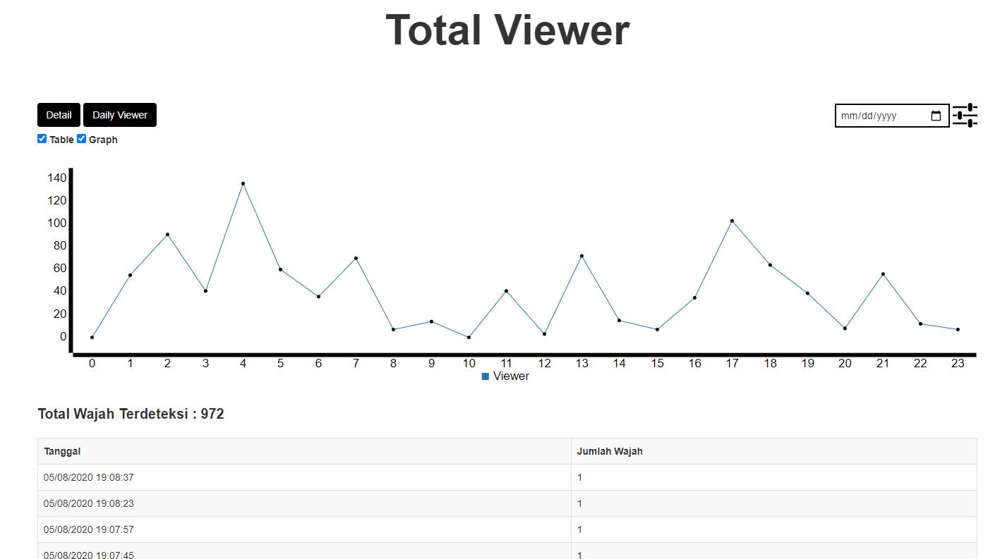

Face Detection System for Advertising Placement is a device that can count the human faces viewing an ad to provide the best position statistics for ad placement without a market density survey. This device uses face detection, face tracking, and face counting systems. After a new face is counted, the system will save the data to a CSV file, then the CSV file will be displayed on the website.
Features :
- Portable device
- Detect, track, and count human faces that viewing the ad
- View statistics on when the ad was most viewed, by date and time
Benefits :
- Minimizing errors in ad placement
- Advertisers get more viewers so that they are more widely known
Web Design Output :

A Page that contains a graph and a time system capturing human faces.
Tags: 2020, Python, Raspberry Pi, Apache Web Server, HTML, CSS, JS, HaarCascade